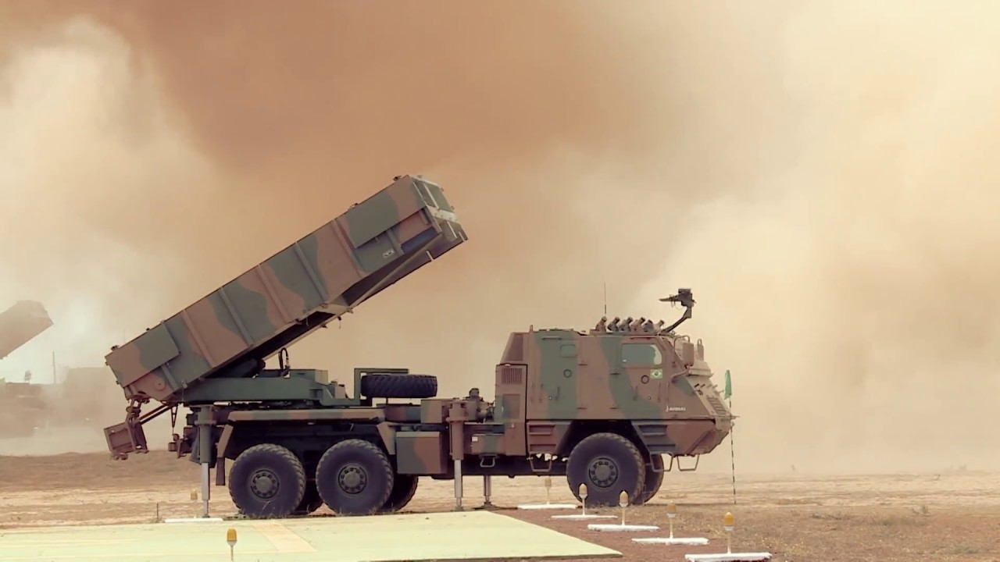

Astros II is a self-propelled multiple rocket launcher produced in Brazil by the Avibras company. The Astros 2020 project is an ongoing collaboration of the Brazilian Armed Forces with the University of Santa Maria (UFSM).
During my period at Astros, I wrote and published a scientific paper describing how to physically simulate dynamic agents for large worlds. This solution was developed inside Unity for accurately simulating military vehicles in large terrains that are not natively supported by Unity. The paper is available here:
I also worked in assignments that ranged from efficient map data manipulation to intuitive UI/UX. Mainly, I created a new map loader version without that allocated zero managed memory, easing the pressure in the garbage collector and providing a smooth experience.
Some of the UI/UX work that I collaborated: